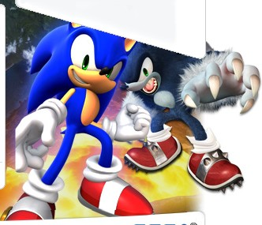

關於2008年E3展的Sonic Unleashed情報會在此更新。
[table=90%]˙時間：
2008年E3展舉行於7/14至7/17(洛杉磯時間)。 [/table]
˙Sonic Unleashed的情報
這次展出的是XBOX360版本
＊影片
˙E3展影片
。線上觀看高畫質影片
˙E現場試玩影片(Gamespot)
。KIRBY整理的情報
純試玩影片
˙E現場訪談影片(Gametrailer)
˙現場影片(IGN)-情報：沒有太空或彈珠關卡
＊圖
˙
˙新擷圖
[img=503,247]http://i434.photobucket.com/albums/qq65/sonichub/SWA/screenshot/080715/001.jpg[/img]
二、三、四、五、六、七、八、九、十、十一、十二、十三、十四、十五、
十六、十七、十八、十九、二十、二一、[ur=http://i434.photobucket.com/albums/qq65/sonichub/SWA/screenshot/080715/022.jpg]二二[/url]、二三、二四、二五、二六
˙官網首頁的圖片動畫
美國SEGA官網首頁右下角

附件: S.jpg
副贈截圖和那動畫的截圖(一、二、三、四)以及背景圖和背景圖
＊預覽
˙CAMP SONIC
-狼Sonic有超過30種的連擊技能. 每種都是在得到經驗值後解開
-沒有連線多人模式
＊訪談
˙Joystiq(這是在播放E3展影片[也就是FTP上的]之前的訪談)
-部分關卡皆包含日與夜關卡。當在這些區域和村莊時，遊戲時間可推進、讓Sonic變身，不必黏在特一型態。
－其他動作關卡的部份為日或夜遊玩特別設置(也就是只有日或夜的關卡)。當Sonic在這些區域，遊戲時間不會推進。
-中國和非洲除了有可解開的小關卡外，都有日和夜關卡。
-除了Sonic經典的速度形式和新的半狼型式外。還能在小部分控制其他人物，如小遊戲，但遊戲99%是Sonic的兩種型態。
-分歧路線分兩種：第一種，是標準的上下、左右分歧；第二種，即時按按鈕片段(QTE)，發生在跳躍時，如果玩家成功按下按鈕，Sonic會跳得更遠過更高、然後到達關卡中不同的路線。
-夜晚關卡的連擊系統(combat system)。
-PS3&XBOX360和Wii&PS2有許多差異。
-在發售前會有試玩版。
＊其他
DASGAMER(重點是那個狼Sonic裝XD)
...
ftp://segapr.segaamerica.com/SEG ... 0Universal%20Lo.mov我不管啦我不管啦我不管啦我不管啦~!!!!
Super Sonic跟Wolf Sonic一樣Sexy啊!!!(尖叫)
好喜歡中國關卡www
BGM應該是這次的主題曲ww
這個遊戲我一定要Wii跟PS3都入手!!!
這個實在是太Awesome了啦SEGA>口<
[
本文最後由 kirby60319 於 2008/7/16 06:42 AM 編輯 ]
真的是好讚的畫面...[:smile42:]
終于明白狼人是怎麽行動的了...我覺得Knuckles可以退休了*逃*
狼人確實很帥~！
BGM叫Endless Posibility，是Jaret Reddick演唱的。是SU的新主題曲
By the way,
根據這篇:
http://www.sonicstadium.org/board/index.php?showtopic=34073日版的Sonic Unleashed是Sonic World Adventure
為什麼歐美的名字這麼帥氣,
亞洲的這麼.....這麼....孩子氣QAQ
影片好讚[:smile42:]
終於有禿狼的遊玩片段了XD
關卡和劇情片段全都很讚,變成禿狼那段很萌
謝謝兩位的情報
越來越期待啊
真的太帥了，主題曲也超讚的，請問一下這個影片在哪裡可以下載到??因為我每個影片都想蒐集。^^[:egg2:]
禿毛狼進攻E3了
可怕!
這禿毛狼實在很慢
但攻擊可是很痛的
在影片中
禿毛狼除了狂抓小兵
還有連打拳擊(圖一)
還有伸長的手?(圖二 怪怪叮咚勒)
SEGA也新増了
連打的功能(類似無雙)
說不定連打會對過關評價有關係
還發現一點禿毛狼不會滑竿子???(圖三紅框)
原文由 leo10000 於 2008/7/16 01:33 PM 發表 
還發現一點禿毛狼不會滑竿子???(圖三紅框)
我記得以前的訪談裏有提到半狼人是用盪的方式穿過關卡的,我想,既然已經有盪的方式,應該就不會再有滑杆了吧?而且在滑杆上速度是很快的……狼人上半身比下半身大，會掉下去……[:smile17:] *逃*
[
本文最後由 rescueTails 於 2008/7/16 02:04 PM 編輯 ]
狼人模式根本就是戰國mode啊…
看那個hit combo是怎樣XD
只欠沒有馬讓你騎而已
這樣一來狼人應該會有甚麼特技跟必殺技吧
新出來的影片太棒了[:egg35:] 我只能說sonic超帥[:egg38:]
終於不是\"禿狼\"啊XD
一開始看以為肚皮一根毛都沒有 [被伸縮手PIA飛]
狼SONIC太帥啦~~!!!
原文由 wendy92lam 於 2008/7/16 03:42 PM 發表
終於不是\"禿狼\"啊XD
一開始看以為肚皮一根毛都沒有 [被伸縮手PIA飛]
狼SONIC太帥啦~~!!!
恩,我也是XD
後來仔細看才看出毛毛的...
Eggman：我是多毛控!(誤)
_
另外四格畫面中,
右上角禿狼要從太空艙跳下去的時候,可見地球裂成許多部分?!(至於地球何時碎,請詳見禿被返轉成禿狼那段)
然後換為左下角...
原文由 lplp99889 於 2008/7/16 12:50 PM 發表
真的太帥了，主題曲也超讚的，請問一下這個影片在哪裡可以下載到??因為我每個影片都想蒐集。^^[:egg2:]
GT新增高畫質影片~雖然從原本的300多MB壓到50多MB,但品質還不錯
毛茸茸啊!
發現禿狼是在槓上用雙腳慢慢走,很靈巧XD
禿狼平時用四隻腳跑
其他部份各位就自己看和享受吧
看到高畫質
終於看清楚四格遊戲畫面的內容
第二格看到狼SONIC被拋出太空了0.0
接著第三格又出現狼SONIC飛往崩壞的地球
啊!!!狼SONIC萌死人啦!! 被拋很萌 [<<此人花痴]
很想知道更多狼SONIC的故事WWW
最後的SUPERSONIC愈看愈像七龍珠了=3=
嘛,
我這個list連帶我剛剛的post會太長=A=
情報for SU:
-Hedgehog Engine使Sonic可以達到每小時300km的速度
-Check Point(紀錄點)翻新ww
-指令鈕.好比說影片裡有時需要按B來滑行通過狹窄的縫隙.或是跟上個影片一樣,藉由輸入指令而使用Tricks.
-新的待機動作是躺在地板上!?那不是STH時代的待機動作嗎OwO!
-Homing Attack時有 lock on標誌
-中國關卡有會轉的大圓盤=口=
-又有老鷹wwwwww(死啦你)
-水上競走重出江湖!
-按下某個鍵的話WereSonic可以跑快一點
-Tails, Knuckles, Shadow在主劇情裡有戲份(喔耶喔耶www)
-WereSonic可以爬竿子....(糟糕思想)
-WereSonic遇到平衡板時(請看影片13:55)會真的擺出平衡動作
-晚上時Ring會轉成Vitality Guage的能量...算是Health Bar吧w
-主劇情是:Sonic為了將繃壞的星球給復原,得將七顆C.E帶回世界各地的神殿去
-白天的音樂很有活力;晚上的音樂比較....黃昏?
-可以把打破的花瓶打的更破ww
-Sonic跟WereSonic的使用是一半一半
-有一個白天關卡有6miles長...
-連線功能可能有?
-WereSonic沒辦法游泳,因為手太重了w
-打門時木片會一片一片的掉下來
-假如說不想走平衡板的時候,可以跳下去然後立刻按B(的樣子)改為單槓橫向爬行(盪過去?)
High去了XDDD
[ 本文最後由 kirby60319 於 2008/7/17 08:43 AM 編輯 ]
遊戲演示讚!
之前說的每30秒變換鏡頭的説法,可能是理解有誤,從錄像上看來變換鏡頭依然是在某個特定的位置才會出現的。
啊，300km/s的速度真的很頭暈……[:smile6:]
希臘的那個關卡名字就叫Mykonos，現場玩的這個應該是試玩版.
主持人玩到分支提示時說了句:What\s that? 結果失敗了……[:smile35:] 然後還Game Over了兩次
可以看出這次的3D攝像機視角大部分是追尾（就是典型的第三人稱），而不是以前那樣隨意變動
狼人的玩法真的很像無雙系列呢……還可以吸魂？！鬼武者麽……
狼人的跑步姿勢太萌了……~
[ 本文最後由 rescueTails 於 2008/7/17 11:48 AM 編輯 ], 121.205.10.199, 0, 0, 1, 0, 0, 0, 0, 0, 0, 0, 0
感謝KIRBY整理情報
這次的E3展很震撼XD
幾隻肥蛋的肥機械混到黑暗怪獸之中,動作也很可愛
狼型態的待機動作會是什麼呢,以及掉到水中的樣子XD
希望下次會有其他人物的畫面和更多的劇情
Egg：這狗毛太多...我不想養了(誤)
KIRBY: Sonic可以達到每小時300km的速度
Marxie: 300km/s的速度真的很頭暈
兩位說的完全不一樣....汗
原文由 kirby60319 於 2008/7/17 08:39 AM 發表
-Hedgehog Engine使Sonic可以達到每小時300km的速度
每小時300km的速度能看嗎? 時速300KM....這個速度還真是悽慘
高鐵700T的速度一樣快...一堆超跑都比這個快多了....
打錯了吧...
原文由 rescueTails 於 2008/7/17 11:21 AM 發表
啊，300km/s的速度真的很頭暈……
每秒300KM的速度還真是驚人阿....[:egg19:]
就算是超音速也不會這麼快的吧....單位錯誤?
攝氏零度之海平面音速約為1193km/hr，也就是時速1193KM
每秒約340m/s
Marxie說的單位轉過來就是...每秒300000公尺的速度
KIRBY說的單位轉過來就是...每秒83公尺的速度
SU的速度應該不會這樣吧??
剛下載好最高畫質的,截幾張圖
----以下為四格畫面的其中一格,拍的時候抓不到好時機囧\"
˙BOSS
火焰機械 、
近距離機械機械機械、
波~~、
注意炸彈的號誌囧?!
˙關卡
站在火箭上煙火,可見地球上佈滿納紫色射線的線(讓我想起最早被某網友偷出來其中幾張圖,像Iblis的怪獸,也就是沉睡在地球核心的怪獸)
禿狼攻擊、
抓起敵人(有段還抓著敵人旋轉,懶得截)
敵人..
------
劇情片段中,肥蛋的機械內,除了肥蛋的標誌外,還可以看見旋轉的Sonic模型圖
如圖所示(喜歡肥蛋的可以自行吃掉)
副贈
Sonic形象超損的某個畫面XD
副贈
禿狼(其實不禿囧\")和
正要推肥蛋機械的禿XD
(點連結後,再點圖放大)
原文由 opus 於 2008/7/17 06:34 PM 發表
KIRBY: Sonic可以達到每小時300km的速度
Marxie: 300km/s的速度真的很頭暈
兩位說的完全不一樣....汗
每小時300km的速度能看嗎? 時速300KM....這個速度還真是悽慘
高鐵700T的速度一樣快...一堆超跑都比這個快 ...
啊,我打錯字了....[:smile33:]
不過訪談裏說的，剛才聼了一下，他說的似乎是300千米/每小時……
肥蛋有Sonic的標誌……難道他已經準備好拿Sonic做實驗，然後試驗失敗了……？
狼人遇到Amy的時候……不知道會怎樣呢（這次確定Amy會登場）
[
本文最後由 rescueTails 於 2008/7/17 10:08 PM 編輯 ]
SU晚上時玩法像無雙模式，不知有沒有己方的大將或敵大將，嘻嘻。
很高興動作模式的Sonic Game里有不會因沒有Ring，
受傷害一下就死的玩法。(但只有在晚上才有這種玩法[:smile22:] )
雖說Chronicles也是這樣，但這Game的類型是RPG。
如果RPG沒有這種玩法就不是RPG了。
吸魂。自動的還是像鬼武者要按圓鍵啊，而且魂有什麼用？
看影片后，本人認為SU白天玩法應該很接近秘密戒指的玩法。
讓Sonic變狼，Eggman除了為了試驗以外，我想他應該還有其他目的？
[ 本文最後由 tails_7749 於 2008/7/17 10:15 PM 編輯 ]
破解Super Sonic(搭配最早釋出的截圖),且吸取C.E.的力量.讓Sonic再也無法變身為Super Sonic
同時Eggman的太空戰艦利用吸取的力量發出的砲讓地球碎成許多部分
但Eggman有可能沒料到會有Sonic變狼型態的後果
˙(引用KIRBY的話)主劇情是:Sonic為了將繃壞的星球給復原,得將七顆C.E帶回世界各地的神殿去
＊配合影片與最早被大量偷出的截圖,劇情順序是：
1.(影片)Sonic在太空戰艦上與Eggman一搏，但不料被Eggman的蛋型機械的手抓住，不爽的掙扎著與看著Eggman→
2.(影片)Sonic變成Super Sonic，從蛋型機械的手中爆出來，然後亂飛XD
3.(圖片)Super Sonic不料陷入Eggman的機械陷阱中→
4.(影片與部分圖片)機械開始破解Super Sonic，Super Sonic變回Sonic(也可見在身旁C.E.)，然後Sonic變成狼Sonic；同時太空戰艦的砲利用這力量把地球碎成許多部分→
5. (影片)狼Sonic被拋向地球....
--據說是分隔線--
狼Sonic並不是被敵人打一下就掛.那個被打一下就掛的片斷好像是從背後偷襲的
然後其他被攻擊的都只減一些命
螢幕左下角兩條分別是:Shield(防護,可能靠類似吸魂的補充...)、Vitality(生命值,靠Ring補充)
--據說是分隔線--
然後最終大魔王應該還是Amy[誤]
-*-*-*-*-*-據說是分隔線-*-*-*-*-*-
忍不住想說一下.....
有\"combat系統\"和\"很多敵人\"不等於無雙遊戲,而且\"很多動作遊戲\"都有這兩個要素,懶得舉例,以免又被扯在一起
再加上SU的狼Sonic不只有打一堆怪而已,影片中就可以看見很多\"技巧和解謎要素\"
\"打怪\"跟之前的遊戲一樣只是關卡中的一部份而已. 舉個例:SoTH(15th),雖然沒連擊系統、敵人也沒那麼多,但關卡或任務中一些地方會幾團不是打一下就掛的敵人
然後關於類似\"吸魂\",舉個例,SoTH(15th)就有類似所謂的吸魂(擊敗肥蛋的機械或炎怪獸等),是補充技能值的
然後靠Ring補充的生命值,舉個例,在SA2中靠操控機械過關的Eggman和Tails就是這種方式
然後狼Sonic能伸長的手. 若修改為無法伸長,攻擊範圍會很小,無法一次打很多敵人,然後就會遭到玩家更多的不滿...
[ 本文最後由 binyi0219 於 2008/7/18 04:26 PM 編輯 ]
發現在Sonic Channel制作了Sonic Unleashed的日本官方網站。
http://sonic.sega.jp/SonicWorldAdventure/#/index新的游戲情報可以在這兒取得了，只要懂日本字。
只是好奇怪，日本稱這個Game叫Sonic World Adventure。
啊…，該叫Sonic Unleashed還是Sonic World Adventure？
.............................
我看還是叫SU好了= =|||
SWA.....怪怪的
原文由 kirby60319 於 2008/7/19 06:44 AM 發表
.............................
我看還是叫SU好了= =|||
SWA.....怪怪的
就是啊=3=
因為昨晚冰敲我說SWA官網開張
我居然問\"SWA是什麼..\"
我愛SU這個名稱愛到連SWA是什麼都不知道了 [是你的問題吧...]
原文由 jerrytown 於 2008/7/21 04:50 PM 發表
請問可以幾人玩
根據E3展與之前雜誌的情報
單機沒有多人 (遊戲99%都是兩種型態的Sonic,其他人物則是小遊戲[或稱小任務])
也沒有線上多人模式
所以是單人...
Gamespot新增三個純試玩的影片(只有遊戲的聲音),雖然都是之前影片見過的關卡:希臘白天、希臘晚上、中國白天
我是連結(頂樓已更新連結)
期他就自己看頂樓,有時候懶得再回覆[逃]